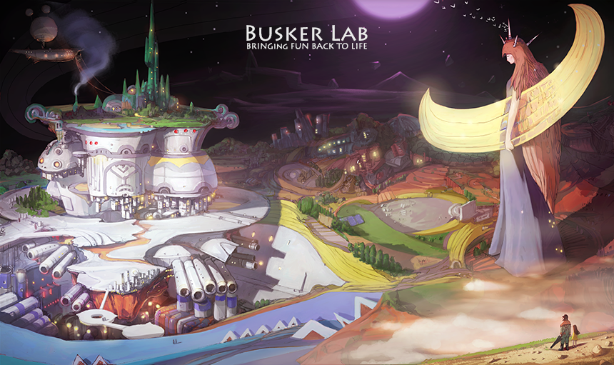

|

Welcome to Busker LabBusker Lab is an independent game studio with the simple goal of creating games full of wonderful stories and fun.From our perspective, games are a form of interactive media art. We make games to bring more color to your daily life through a wide variety of game experiences in this form of playable entertainment. Members of Busker Lab collaborate remotely from every corner of the world to make great games. We meet a variety of game lovers from all over the world and listen closely to their opinions about games. Facebook - http://facebook.com/buskerlab |